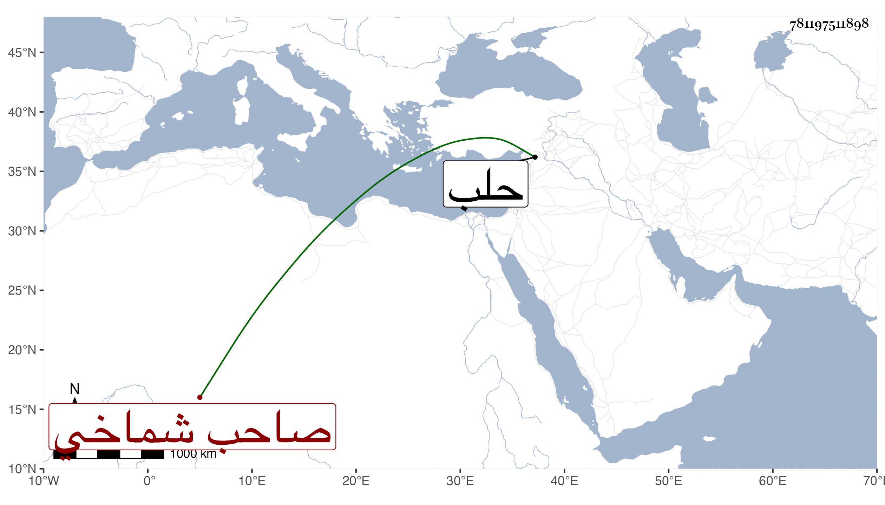

0902Sakhawi.DawLamic.ITO20230111-ara1.EIS1600.781197511898
Biography ID: 781197511898
إبراهيم صاحب شماخي وتلك النواحي قدم حلب صحبة تمرلنك لما دخل إلى البلاد الشامية في سنة ثلاث وثمانمائة ثم عاد إلى بلده واستمر حاكمها فلما ملك قرا يوسف توريز وما والاها جمع عساكره وتهيأ لقتاله فكانت الكسرة عليه ولكن بعد أن أمسكه قرا يوسف أطلقه وأعطاه بلاده فتوجه إليها واستمر تحت طاعته حتى مات بعد سنة عشرين أو في حدودها . ذكره ابن خطيب الناصرية وكذا شيخنا في أنبائه لكن باختصار جدا .
